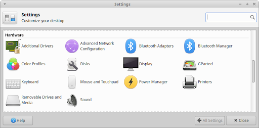
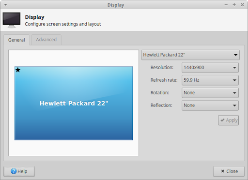
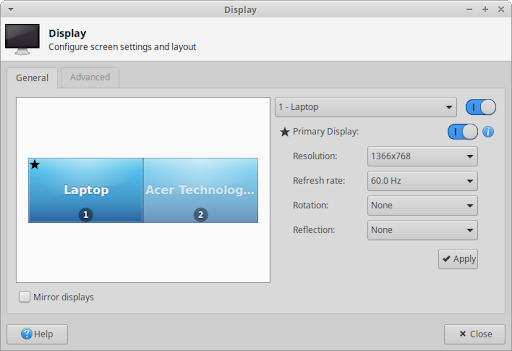
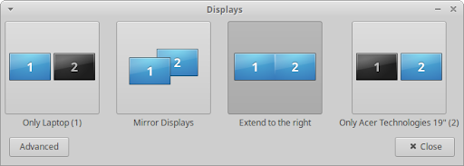
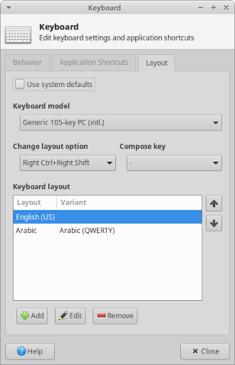
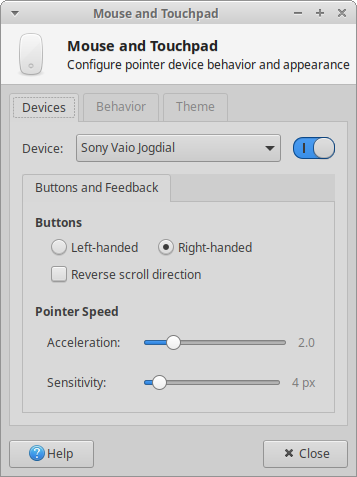
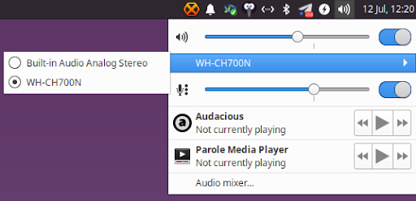
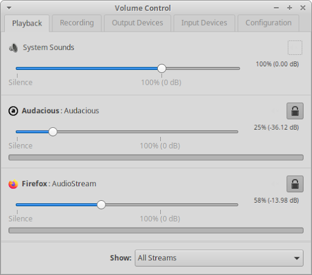
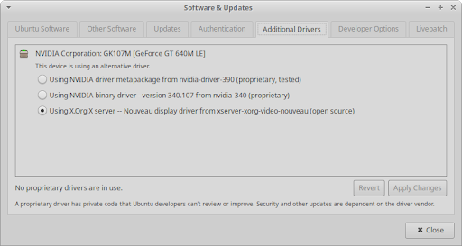

O seu computador consiste num conjunto de componentes e dispositivos que são conhecidos coletivamente como o hardware do computador. Isto inclui os componentes internos, tais como a CPU, placa-mãe, disco rígido, placa gráfica, placa de som, adaptador wifi e adaptador bluetooth, bem como periféricos externos tais como o monitor, rato, teclado e impressora.
O Xubuntu configura o seu hardware automaticamente com predefinições otimizadas, mas podem existir ocasiões onde terá necessidade de alterar estas configurações de hardware. Esta secção fornece informações acerca de ferramentas para o configurar, as quais podem ser acedida através da categoria Hardware do , da categoriaDefinições do
, da categoriaDefinições do  (Ctrl + Esc), e doLocalizador de aplicações (Alt + F3).
(Ctrl + Esc), e doLocalizador de aplicações (Alt + F3).

Quer possua um único monitor ou vários, pode facilmente aceder às suas opções de personalização se abrir as definições de Ecrã , as quais também são acessíveis através do atalho de teclado Super + P.

No separador Geral, pode efetuar alterações à resolução do ecrã, taxa de atualização, rotação e reflexo a partir das várias listas expansíveis. Clique no botão Aplicar para experimentar as alterações efetuadas. Irá surgir uma janela que lhe permitirá confirmar ou rejeitar as alterações. As configurações anteriores serão restauradas caos não confirme ou rejeite as alterações dentro de 10 segundos.
![[Nota]](../../libs-common/images/note.png)
|
|
|
Nota: Para alterar a forma como os tipos de letra são apresentados ou configurar um tamanho de texto personalizado, consulte as opções no separador Tipo de letra das definições de Aparência. Para gerir as opções de economia de energia, tais como quando o computador deve entrar num modo de poupança de energia ou a quantidade de brilho a ser baixada após inatividade (apenas aplicável a portáteis), consulte as opções do separador Ecrã do Gestor de energia. Caso esteja a ter rasgamento de imagem durante a reprodução de vídeos, pode alterar o valor vblank do compositor ou alterar o ficheiro de configuração xorg. |
Os ecrãs de alta resolução podem exigir configurações específicas para a leitura de texto e de outros objetos do ecrã. Os ecrãs de computadores portáteis de alto padrão e outros ecrãs de ultra-alta resolução podem ter uma alta densidade de pixeis num pequeno fator de forma. São habitualmente referidos como ecrãs HiDPI (Elevada densidade de pontos por polegada), 4K, UHD, WQHD, QHD, ou 1440p. Alguns computadores portáteis com estes tipos de ecrãs incluem os MacBooks com “Ecrã Retina”, Dell XPS 13, e ThinkPad X1 Carbon. Os televisores 4K e 8K UHD também podem necessitar de otimização a fim de tornar o texto legível às distâncias de visualização típicas destes ecrãs.
Para melhorar a visibilidade do texto e dos objetos nestes ecrãs de grandes resoluções, pode efetuar as seguintes alterações.
Abra as definições de Aparência altere para o separador Definiçõese mude Tamanho da janela para ‘2x’.
Abra o Gestor de janelas e no separador Estilo, altere para um tema HiDPI como o ‘Default-hdpi’ ou o ‘Default-xhdpi’.
Quando possui um monitor externo ou televisor ligado ao seu computador portátil ou vários monitores e/ou ecrãs ligados ao seu computador de secretária, ficarão visíveis mais opções no separador Geral das definições de Ecrã. Escolha o ecrã cujas definições pretende alterar selecionando-o na área de pré-visualização ou alterando a entrada na lista expansível do ecrã.

Uma das opções adicionais apresentadas numa configuração com vários ecrã é a opção de reorganizar os ecrãs na área de pré-visualização se os arrastar e largar para que correspondam à forma como se encontram dispostos fisicamente. Outras opções para múltiplos ecrãs incluem desligar um ecrã, definir um monitor como ecrã principal, espelhar o ambiente de trabalho em vários ecrãs ou estender o ambiente de de trabalho ao longo de ambos os ecrãs.
|
|
|
|
Nota: Com um ecrã definido como monitor principal, pode configurar os painéis, ícones do ambiente de trabalho e notificações a aparecer nesse ecrã. Clique no ícone de informações junto do interruptor Ecrã Principal para abrir a janela das respetivas configurações. |
O separador Avançado fornece ainda mais opções para múltiplos ecrãs, incluindo a opção de guardar configurações de um ecrã para que possam ser aplicadas mais tarde. Quando a opção Configurar novos ecrãs se encontra ativada, surgirá o mini diálogo Ecrãs, o qual fornece as definições de ecrã mais comuns, bem como quaisquer configurações de ecrã guardadas pelo utilizador. O atalho de teclado Super + P irá abrir este diálogo numa configuração de múltiplos ecrãs e clicar no botão 'Avançado' abre as definições do Ecrã.

O interruptor Ativar perfis automaticamente quando novos ecrãs forem ligados aplicará a configuração guardada por um utilizador quando os ecrãs ligados corresponderem aos ecrã encontrados numa configuração guardada.
Para trabalho sensível a cores, as definições de Perfis de cor permitem-lhe instalar e gerir perfis de cor para os seus ecrãs, impressoras e digitalizadores. De forma a permitir que os perfis de cor sejam utilizados, o daemon necessário precisa de estar instalado e em execução em segundo plano:
Para calibrar o seu dispositivo, é necessário instalar o DisplayCAL, o Gestor de cores do GNOME ( gnome-color-manager
gnome-color-manager redshift
redshift
Durante a instalação do Xubuntu, foram apresentadas e aplicadas opções para selecionar o idioma e a disposição do teclado. A fim de efetuar alterações a estas e outras opções de teclado, abra as definições de Teclado.

O separador Comportamento fornece opções para o estado da tecla Num Lock, velocidade de repetição e atraso das teclas, bem como a velocidade da intermitência do cursor do texto. O separador Atalhos de aplicações permite-lhe gerir os atalhos de teclado para o lançamento de aplicações. O separador Esquema fornece opções para selecionar o modelo do teclado e gerir os idiomas e disposições do teclado. Quando existirem várias disposições presentes, também será capaz de definir um atalho de teclado para alternar através das diferentes disposições.
|
|
|
|
Nota: Para determinar facilmente qual a disposição de teclado atualmente ativa e alternar entre elas, pode adicionar o suplementoDisposições do teclado ao painel. Para atalhos de teclado adicionais não relacionados com o lançamento de aplicações, consulte o separador Teclado das definições do Gestor de janelas. Para controlar o comportamento de várias teclas do teclado relacionadas com a energia, consulte o separador Geral das definições doGestor de energia. |
Os dispositivos apontadores como o rato, o painel de toque, a trackball ou o tablet gráfica são automaticamente detetados e configurados durante o arranque ou quando são ligados. Caso pretenda alterar as opções e o comportamento predefinidos de um dispositivo, abra as definições do Rato e painel de toque.

O separador Dispositivos permite-lhe selecionar cada dispositivo individual da lista expansível de Dispositivos e ajustar as suas opções individuais. Isto inclui se está ativo, bem com a organização dos botões, a direção do deslocamento, a velocidade do ponteiro e a sensibilidade do painel de toque. Se o dispositivo selecionado for um painel de toque que se encontre a utilizar o controlador Synapatics, irá surgir um separador Painel de toque junto ao separador Botões e resposta com opções para ativar e desativar o painel de toque durante a introdução de texto, tocar para clicar, bem como o deslocamento pelos cantos e através de dois dedos. Irá aparecer um separador Tablet quando o dispositivo detetado estiver a utilizar o controlador Wacom.
O separador Comportamento inclui definições globais que afetam todos os dispositivos apontadores, incluindo a sensibilidade do arrastar e largar e da operações de duplo clique. O separador Tema permite-lhe definir o tema do cursor.
Alguns painéis de toque podem ser detetados como dispositivos normais de rato, embora sejam realmente painéis de toque. Neste caso, o dispositivo Painel de toque não estará disponível nas preferências do rato. Consulte a página Painéis de Toque na wiki da comunidade Ubuntu para mais informações sobre painéis de toque.
No Xubuntu, o som é processado através do servidor de som PulseAudio, o qual é capaz de executar funções avançadas nos dados de som que entram e saem do seu hardware. Podem ser efetuadas alterações às preferências de som através das teclas de multimédia do teclado, do suplemento de som da área de notificações do painel ou das definições do Controlo de Volume PulseAudio.
O suplemento de som do painel oferece-lhe um acesso fácil para aumentar, diminuir ou silenciar o volume dos dispositivo, selecionar vários dispositivos de entrada e/ou saída quando aplicável, bem como controlar a reprodução de vários leitores de áudio e vídeo. A entrada Misturador áudio... no fundo da janela popup do suplemento abrirá as definições do Controlo de Volume PulseAudio.

É possível ajustar o volume de saída através da utilização da roda de deslocamento do sobre o ícone do suplemento de som. Para personalizadas se várias teclas multimédia se encontram ativas, se uma notificação aparece quando o volume de saída é alterado e que leitores multimédia irão aparecer na janela popup do suplemento, efetua clique direito no suplemento de som.
A janela de definições do Controlo de Volume PulseAudio, que pode ser encontrada na categoria Multimedia do  , possui vários separadores para consultar e configurar as definições de som.
, possui vários separadores para consultar e configurar as definições de som.

Reproduzir - Pode ajustar o volume dos sons do sistema, bem como definir o volume, balanço de canais e o dispositivo de saída de cada aplicação em execução.
Gravar - Lista aplicações que se encontram a gravar e permite ajustar o volume e o dispositivo de entrada.
Dispositivos de Saída - Lista dispositivos de saída de áudio e permite ajustar a fonte, o volume e a latência da sua saída.
Dispositivos de Entrada - Lista dispositivos de entrada de áudio e permite ajustar a fonte, o volume e a latência da sua entrada.
|
|
|
|
Nota: para ativar os sons do sistema, abra as definições de Aparência, mude para o separador Definiçõese ative a opção ‘Ativar sons de evento’. Instale um dos seguintes temas, tais com o o FreeDesktop ( |
Um controlador de dispositivo é um programa de computador que controla um dispositivo em particular ligado a um computador. Atua como uma ponte que permite que o sistema operativo e outros programas comuniquem com o hardware. Um controlador de dispositivo ativa-se quando o dispositivo é encontrado num computador ou quando o dispositivo é ligado.
A maioria dos controladores de dispositivos são instalados por defeito no Xubuntu, pelo que tudo deveria funcionar automática assim que os ligar. Os controladores de dispositivos podem ser de código aberto ou proprietário e são fornecidos pelo fabricante do hardware ou pela comunidade de código aberto.
O Xubuntu é uma distribuição Linux e a parte fundamental do sistema operativo é o kernel Linux. O kernel Linux contém milhares de controladores de dispositivos e a sua maioria é de código aberto, o que permite que os programadores do kernel os possam alterar. Para atualizar estes controladores de código aberto, só necessita de atualizar o kernel Linux, que é um dos componentes atualizados através das Atualizações de Software.
Quando os fornecedores de hardware não fornecem detalhes técnicos suficientes para o seu hardware, não é possível criar um controlador completo de código aberto, pelo que o hardware pode não ter um controlador de código aberto ou terá um controlador de código aberto com funcionalidades limitadas. Alguns controladores de código aberto sofrem engenharia reversa para fornecer uma alternativa ao controlador proprietário do fabricante do hardware, mas estes não possuirão todas as funcionalidades.
Alguns fornecedores de hardware não fornecem controladores de código aberto para o seu hardware, fornecendo apenas controladores proprietários, também conhecidos como controladores de código fechado ou binários. Sem estes controladores proprietários ou firmware, os componentes ou dispositivos podem não funcionar corretamente ou de todo, Normalmente, estes controladores precisam de ser instalados manualmente, uma vez que não podem ser incluídos no kernel. A maioria serão controladores para placas gráficas, adaptadores sem fios e firmware do processador, sendo os mais comuns:
Controlador Gráfico NVIDIA - Embora exista um controlador de código aberto através d engenharia reversa, chamado ‘Nouveau’, não possui funcionalidades de gestão de energia e de ajuste do relógio que permitam a sua ótima utilização em jogos e pode causar problemas em placas antigas não suportadas pela atual versão do controlador.
Controlador Gráfico AMD - O controlador de código aberto ‘RadeonSI’ é recomendado para jogos e para utilização doméstica geral, enquanto o controlador proprietário ‘AMDGPU-PRO’ é recomendado para utilizadores de estações de trabalho que necessitem de funcionalidades não implementadas no controlador de código aberto, principalmente o suporte a OpenCL 2.0.
Controlador Sem Fios Intel - O controlador sem fios é de código aberto, mas precisa de um firmware proprietário para funcionar.
Controlador Sem Fios Broadcom - O controlador sem fios é de código aberto, mas precisa de um firmware proprietário para funcionar.
Microcódigo AMD/Intel - Estas são atualizações de estabilidade e segurança para o firmware do processador e é recomendável que se encontrem ativas.
|
|
|
|
Nota: Caso tenha ativado a opção 'Instalar software de terceiros para placas gráficas e Wi-Fi, para além de formatos de multimédia adicionais' durante a instalação, os controladores proprietários necessários serão instalados e detetados automaticamente. |
Para consultar e gerir que controladores proprietários são usados no seu sistema, pode abrir os Controladores adicionais, o qual irá abrir as definições de Software e Atualizações no separadorControladores adicionais.

Alguns computadores podem não ter quaisquer dispositivos listados, quer seja porque os controladores de código aberto são totalmente suportados ou porque não existem controladores proprietários para os dispositivos. Caso existam controladores proprietários instalados, terá as opções de:
ativa-los se o dispositivo não possuir um controlador de código aberto.
alternar entre controladores proprietários e de código aberto.
alternar entre diferentes versões do controlador proprietário.
desativa-los se estiverem a causar problemas e se pretender apenas desliga-los.
|
|
|
|
Nota: Os controladores proprietários são armazenados no repositório de software restrito. Caso este repositório não tenha sido ativado durante a instalação, terá necessidade de o ativar para consultar as entradas listadas na janela. Pode fazer isso se trocar para o separadorSoftware do Ubuntu e ativar a opção ‘Drivers proprietários para dispositivos (restritos)’. |
|
|
|
|
Será necessário estar ligado à internet para instalar os controladores. Ser-lhe-á solicitada a introdução da sua palavra-passe quando alterar o controlador e pode necessitar de reiniciar o seu computador para terminar a ativação ou desativação do controlador. |
|
|
|
|
Cuidado: É raro encontrar controladores de dispositivos na página web de um fabricante. Caso pretenda instalar um controlador manualmente, por favor faça uma cópia de segurança dos seus dados e do sistema por precaução e tenha o cuidado de seguir corretamente as instruções. |